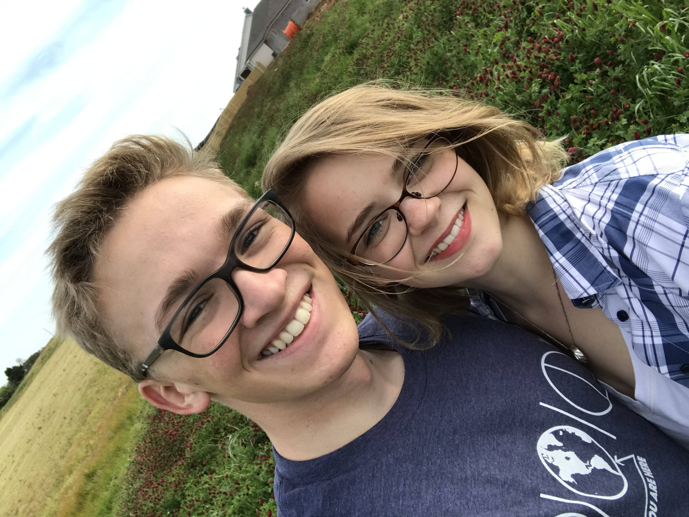

 I am from the green hills of alabama. My wife and I have always had a fascination with nature and the outside world. I find that being outside enjoying nature to be astounding. I've always loved the beautiful spots I can find, and love taking pictures of those places! I especially enjoy the sky. There are so many ways that weather and light can play together to make astonishing views!